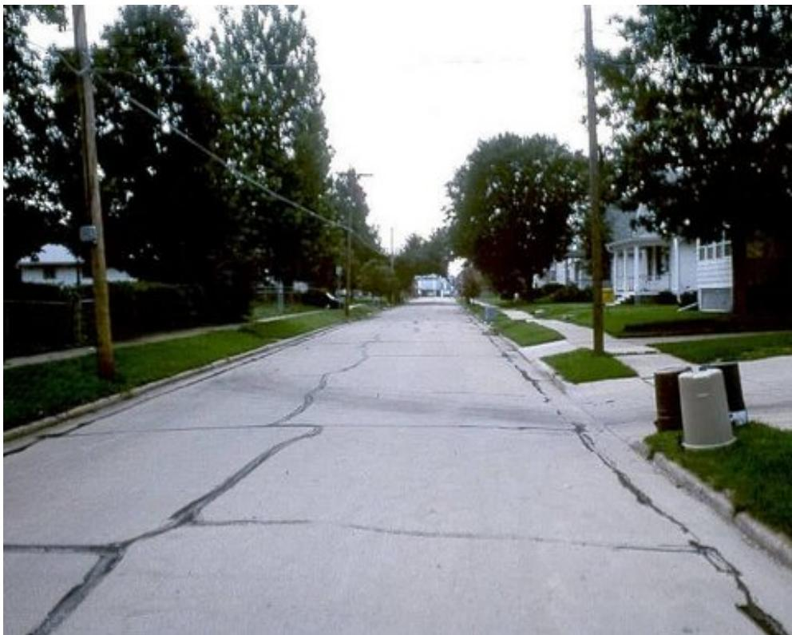
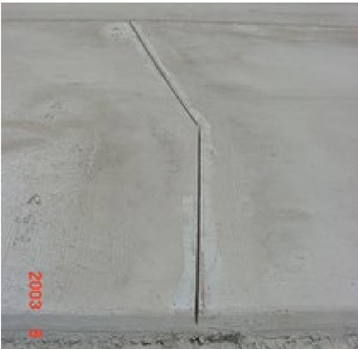

Structural Concrete Fibers in Pavement Prevention
Structural concrete fibers are a reinforcement material incorporated directly into the mix of thin unbonded concrete overlays—typically six inches or less thick and limited to panels about six‑by‑six feet—when conventional dowels or tie bars cannot be used [2]. By holding overlay joints tightly, limiting slab movement and panel migration, and increasing concrete toughness, the fibers preserve aggregate interlock and provide long‑term load transfer that prevents edge, longitudinal, reflective cracking and transverse joint faulting [2]. This preventive action maintains the integrity of the pavement before distress appears and contributes to extended service life compared with non‑fibrous sections [2].
Sources (2)
Purpose and treatment objectives
Structural concrete fibers are employed in both unbonded and bonded concrete overlays to combat a range of cracking‑related distresses. By holding overlay joints tightly, the fibers limit slab movement and panel migration, which prevents edge (corner) cracking, wide transverse joint opening, and transverse joint faulting. The added tensile capacity also restrains the upward propagation of working transverse cracks from the underlying asphalt, reducing reflective cracking, while improving aggregate interlock and concrete toughness to mitigate longitudinal cracking in thin overlays where conventional dowels or tie bars are impractical. [2]
The following figure illustrates the types of distresses that structural fibers are designed to prevent.

Reflective transverse and longitudinal cracking in a concrete pavement overlay. [2]The image displays a residential street paved with light-colored concrete slabs that exhibit extensive, interconnected distress patterns. Prominent dark lines traverse the pavement surface both parallel to the direction of travel and perpendicular to it, indicating longitudinal and transverse cracking respectively.
[2] — Ch. 18 (pp. 363–454)
The reviewer concludes that the objective of incorporating structural concrete fibers in unbonded concrete overlays is fundamentally to prevent deterioration of the pavement. By holding joints tight and restraining panel migration, the fibers maintain aggregate interlock and provide long‑term load transfer, which stops the initiation of edge, longitudinal, reflective cracking as well as transverse joint faulting. This preventive action keeps the overlay intact before any distress occurs and, as a secondary benefit, helps extend the service life of the pavement. [2]
[2] — Ch. 18 (pp. 363–454)
Distress characterization and causes
Edge and longitudinal cracking in unbonded concrete overlays is fundamentally driven by three interrelated mechanisms. First, water infiltrates joint sealants and accumulates at the overlay‑asphalt interface, where it can erode or strip the HMA separation layer and, in freezing climates, generate ice lenses that dramatically reduce bond strength and raise slab stresses. Second, thin overlays often lack adequate dowel or tie‑bar support and sufficient edge reinforcement, leaving them with limited structural capacity to resist traffic loads and to maintain aggregate interlock; this deficiency is compounded by curl/warp stresses arising from improper thickness or aspect ratios. Third, a lack of mechanical restraint permits excessive slab movement and joint opening; the intrusion of incompressible material into joints creates internal pressure during thermal expansion, further accelerating panel migration. Construction errors—excessive placement temperatures above 120 °F, standing water on the HMA surface, or inadequate curing—exacerbate all of these mechanisms by weakening bond quality and concrete toughness. The same moisture‑infiltration and insufficient load‑transfer issues also underlie transverse joint faulting, where internal pressure from trapped water initiates cracking and limited dowel action restricts aggregate interlock. Structural concrete fibers mitigate these distress drivers by holding joints tight, enhancing aggregate interlock, increasing concrete toughness, and thereby improving long‑term load transfer across the overlay. [2]
[2] — Ch. 18 (pp. 363–454)
Applicability and treatment selection
Structural concrete fibers are appropriate for unbonded concrete overlays that are too thin to accommodate conventional load‑transfer devices—generally overlays ≤6 in thick (or <7 in where dowels would be required and <5 in where tie bars would be required) with slab dimensions about six‑by‑six feet or smaller—to keep joints tight, limit slab movement and preserve aggregate interlock. The existing HMA (or concrete) surface must be clean, well‑textured and resistant to stripping and raveling. No specific traffic‑volume limits are prescribed; the treatment is considered suitable across typical traffic levels provided the other conditions are met. Placement must occur under controlled site conditions: surface temperature below 120 °F, a damp (no standing water) separation layer, and adequate drainage to prevent moisture damage. [2]
[2] — Ch. 18 (pp. 363–449)
Condition assessment and timing
To decide if structural concrete fibers are needed, first measure the overlay thickness and check slab dimensions against the recommended limits (e.g., 6‑by‑6 ft panels for overlays ≤ 6 in thick) and verify that joint aspect ratios stay near 1.0–1.5; thin sections that cannot accommodate dowels or tie bars trigger a fiber recommendation. Then core the existing HMA at critical spots such as visible cracks, extract the cores and visually inspect them for stripping or raveling, which also signals a need for fibers to improve toughness and joint tightness. Finally, confirm that the design lacks adequate dowel or tie‑bar provisions (overlays < 7 in for dowels, < 5 in for tie bars), reinforcing the decision to use structural fibers. [2]
[2] — Ch. 18 (p. 419)
Structural concrete fibers are applied as a preventive measure during the design and construction of an unbonded concrete overlay before any distress has manifested when the slab is relatively thin—so thin that installing conventional dowels or tie‑bars is impractical (typically < 5–7 inches). In this condition the fibers “hold joints tight, thereby controlling panel migration and achieving long‑term load transfer through aggregate interlock.” The same preventive approach is also required when the overlay will be placed over an asphalt layer that already exhibits active, working transverse cracks; incorporating fibers (or mesh/bar steel) in the concrete panel allows it to span and reinforce those cracks, helping to prevent reflective cracking from developing in the new overlay. [2]
[2] — Ch. 18 (pp. 363–449)
Materials and repair details
Structural concrete fibers are the primary reinforcement material for unbonded thin‑pavement concrete overlays (UBCOAs). Fibers are introduced directly into the concrete mix to restrain joint opening, limit panel migration, and improve aggregate interlock when dowels or tie bars cannot be used. For UBCOAs that rely on fiber reinforcement, slab panels must not exceed 6 ft × 6 ft (or smaller) and should keep an aspect‑ratio of ≤1:1.5; this geometry minimizes curl/warp stresses in overlays up to 6 in thick. When overlay thickness exceeds 7 in, conventional dowel load‑transfer systems may be added, and tie bars become feasible at ≥5 in. Prior to placing the fiber‑enhanced slab, any transverse or longitudinal asphalt cracks must be repaired with a full‑depth patch on a clean, preferably textured surface. If active transverse cracks remain, supplemental mesh or bar‑steel reinforcement can be installed in conjunction with fibers. Longitudinal joints should be saw‑cut to a depth of one‑third the slab thickness shortly after placement to control cracking. [2]
[2] — Ch. 18 (pp. 363–454)
Structural concrete fibers are most effective when incorporated into thin (≤ 4 in.) unbonded concrete overlays where dowel bars or tie bars cannot be installed. In such overlays the fibers increase concrete toughness and keep joints tight, thereby limiting panel migration and preserving aggregate interlock for long‑term load transfer. Their performance depends on a favorable stiffness relationship: the concrete overlay must remain stiffer than the underlying asphalt throughout seasonal temperature variations, which can be achieved by using a thicker concrete layer or removing excess asphalt. Compatibility also requires that any active transverse cracks in the existing HMA be fully repaired before the overlay is placed. The existing pavement surface must be clean, damp (no standing water), and free of stripping, raveling, or excessive binder that could allow the concrete slab to shift over time. Proper temperature (< 120 °F) and moisture control at placement are essential to develop a strong bond at the concrete‑asphalt interface. [2]
[2] — Ch. 18 (pp. 363–449)
Treatment procedures
To employ structural‑concrete‑fiber overlays for edge and longitudinal crack prevention, first prepare the existing HMA surface: clean the asphalt to achieve a sound bond and keep it damp with no standing water while ensuring its temperature is below 120 °F. This preparation “Provide a clean asphalt surface to enhance the interface bond” and “Control the temperature (less than 120 °F) and moisture (damp with no standing water) of the existing HMA surface at the time of concrete placement.” Next, place the thin‑section concrete mix that incorporates structural concrete fibers; the fibers “hold joints tight” and promote aggregate interlock, especially where dowels or tie bars are impractical. During finishing, avoid locating longitudinal joints in wheel paths, saw‑cut any required joints to a depth of one‑third the slab thickness (T/3), and promptly apply sealant or filler in overlay joints to keep water out. Finally, implement “Use effective curing techniques in a timely manner for the prescribed duration” to protect early‑age strength development. Maintaining the sealant/filler throughout service completes the treatment. [2]
The figure below illustrates a saw cut in a bonded concrete overlay over a working transverse crack in the underlying pavement on I-255 near St. Louis, Missouri.

Saw cut in bonded concrete overlay over working transverse crack in underlying pavement on I-255 near St. Louis, Missouri [2]The image displays a light gray concrete surface featuring a distinct saw-cut joint that transitions from an angled orientation to a vertical one.
[2] — Ch. 18 (pp. 363–421)
Implementation begins with full‑depth repair of any working transverse cracks in the underlying HMA, followed by thorough cleaning and, when desired, aggressive texturing (e.g., milling) using appropriate surface preparation equipment. Prior to placing the fiber‑reinforced concrete, “The contractor must control the temperature and moisture of prepared asphalt surface at the time of concrete placement to avoid excessive drying or moisture at the interface”. After placement, “Use effective curing techniques in a timely manner for the prescribed duration.” Longitudinal joints are saw‑cut to one‑third thickness; “Saw cut longitudinal joints to a depth of T/3 in a timely manner.” and, whenever feasible, “Avoid the placement of longitudinal joints directly in wheel paths.” [2]
[2] — Ch. 18 (pp. 363–449)
Quality and workmanship
Inspectors should verify that the concrete mix actually contains the specified structural fibers and that they are uniformly distributed to hold joints tight and increase slab toughness. The existing HMA surface must be clean, free of excessive binder, and demonstrate resistance to stripping or raveling before placement. Temperature of the prepared asphalt at the time of concrete placement must be below 120 °F and the substrate should be damp with no standing water; these conditions are measured and recorded to avoid a weakened interface layer. Curing practices shall be checked for compliance with the prescribed duration. Longitudinal joints must be saw‑cut to approximately one‑third of the overlay thickness, positioned away from wheel paths when feasible, and the sealant or filler in the completed joints inspected to ensure it remains intact. Finally, the finished overlay should be examined for proper joint location and adequate thickness that supports the intended load‑transfer mechanisms. [2]
[2] — Ch. 18 (pp. 363–447)
To deem a fiber‑enhanced unbonded concrete overlay satisfactory, the design must provide sufficient thickness and limit slab dimensions to six feet by six feet or smaller when the overlay is six inches thick or less, and the panel aspect ratio must not exceed 1 : 1.5, with a target close to unity; structural concrete fibers are required for thin overlays that cannot accommodate dowels or tie bars so that joints remain tight and load transfer occurs through aggregate interlock; construction conditions must also be controlled, keeping surface temperature below 120 °F and the existing HMA damp but free of standing water, and longitudinal joints should be saw‑cut to a depth of one‑third the overlay thickness in a timely manner. [2]
[2] — Ch. 18 (p. 421)
Performance and service life
Structural concrete fibers incorporated into thin unbonded concrete overlays keep overlay joints tightly sealed, limiting panel migration and slab movement. This restraint preserves continuous aggregate interlock, providing long‑term load transfer across panels and reducing edge and longitudinal cracking. The enhanced joint integrity also limits water infiltration and erosion of the underlying HMA, maintaining a smoother riding surface and functional performance. By increasing concrete toughness and supporting sustained load transfer, fiber‑reinforced overlays sustain durability and extend the pavement’s expected service life compared with non‑fibrous sections. [2]
[2] — Ch. 18 (pp. 363–449)
Transverse joint faulting is the primary recurring distress associated with unbonded concrete overlays, and its occurrence is tied to shortcomings in design, material selection, construction detail, and maintenance. Inadequate dowel load‑transfer systems or insufficient overlay thickness can leave the slab vulnerable, while omitting structural fiber reinforcement reduces aggregate interlock that helps distribute loads across joints. Shallow saw cuts (less than one‑third the slab depth) and deteriorated joint filler or sealant allow water and incompressibles to accumulate, further promoting faulting. Maintaining proper dowel provision, using fibers, cutting joints to the recommended depth, and keeping joint fillers sealed are therefore essential to prevent this failure. [2]
The figure below illustrates how concrete pavement joints can develop faulting under these conditions.
 Measurement of concrete pavement joint faulting using a ruler. [2]
Measurement of concrete pavement joint faulting using a ruler. [2]
The image displays a close-up view of a transverse joint in a concrete pavement where the two slabs are at different elevations, creating a vertical offset known as faulting. A wooden ruler is held horizontally across the joint to visually quantify the difference in elevation between the adjacent panels. This visual evidence of faulting illustrates a distress condition that occurs due to loss of load transfer, which can be mitigated by using structural concrete fibers to preserve aggregate interlock and maintain panel alignment.
[2] — Ch. 18 (p. 424)
Monitoring and follow-up
When the sealant or filler left in overlay joints begins to deteriorate, water can infiltrate and accumulate at the concrete‑asphalt interface; such moisture may cause visible erosion or stripping of the underlying asphalt layer or generate ice lenses in cold weather. These signs—joint opening, surface water pooling, loss of bond and rising stress levels in the overlay—signal that additional maintenance, repair, or rehabilitation is required. Likewise, if cores taken from critical locations—especially around existing cracks—reveal visible stripping of the old asphalt, this also indicates that the fiber‑reinforced overlay is no longer performing adequately and further action is needed. [2]
[2] — Ch. 18 (pp. 363–419)
References
- Guide for Concrete Pavement Distress Assessments and Solutions:Identification, Causes, Prevention, and Repair ·
concrete_pvmt_distress_assessments_and_solutions_guide_w_cvr